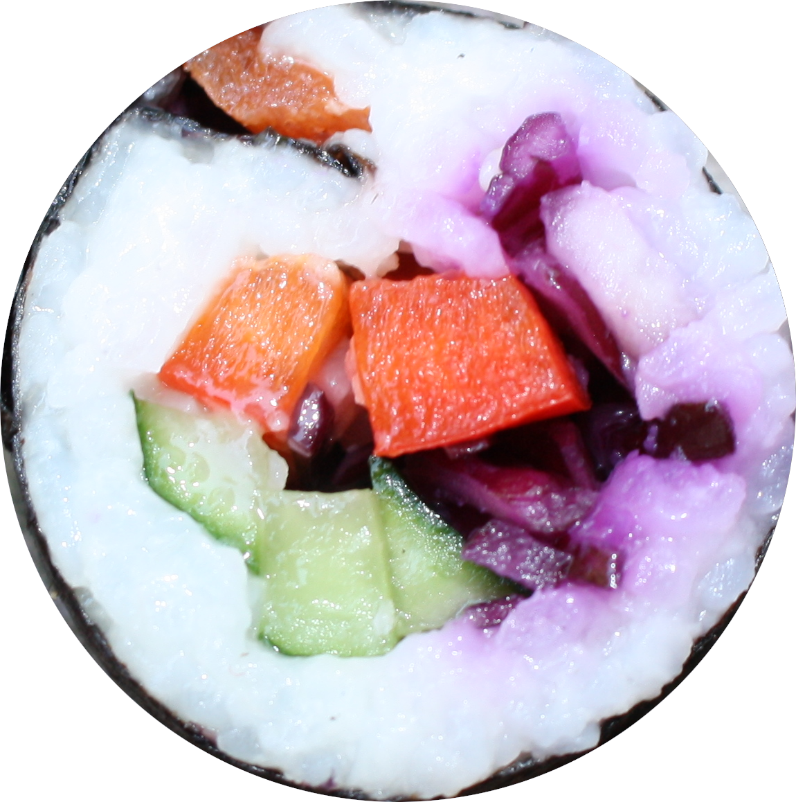

Veganes Sushi bietet eine aufregende und bunte Neuinterpretation des traditionellen japanischen Gerichts.
Sushi & so
Diese Website ist als Übung für Scrollanimationen auf Onepagern entstanden. Sie ist keine Quelle für Sushi-Informationen. Die nachfolgenden Texte sind von ChatGPT formuliert.
Obst und Gemüse in allen Farben – von knackigen Gurken und Avocado über süße Mango bis hin zu zarten Karottenstreifen – verleiht dem veganen Sushi eine lebhafte Optik.

Zu Sushi gehören verschiedene Soßen, die den Geschmack der Rollen intensivieren und abrunden. Auch beim veganen Sushi gibt es zahlreiche Soßen, die sowohl süß, salzig als auch pikant sein können. Hier einige beliebte Varianten:
- Sojasoße (Shoyu)
- Tamari
- Süße Sojasoße
- Teriyaki-Soße
- Sesam-Soße
- Spicy Mayo
- Ponzu-Soße
- Miso-Soße
- Wasabi-Soße
Mit diesen verschiedenen Soßen kannst du deinem veganen Sushi eine individuelle Note verleihen und jede Rolle perfekt abschmecken!
sushi